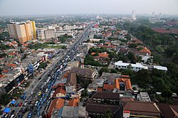
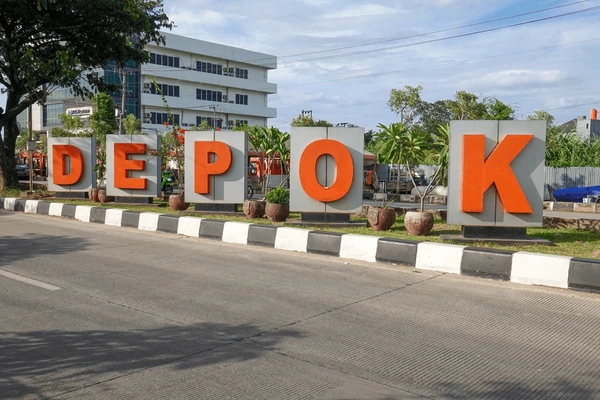
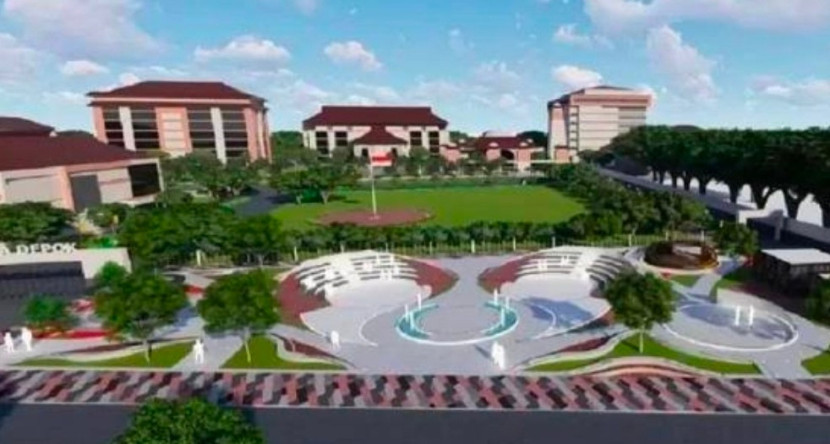
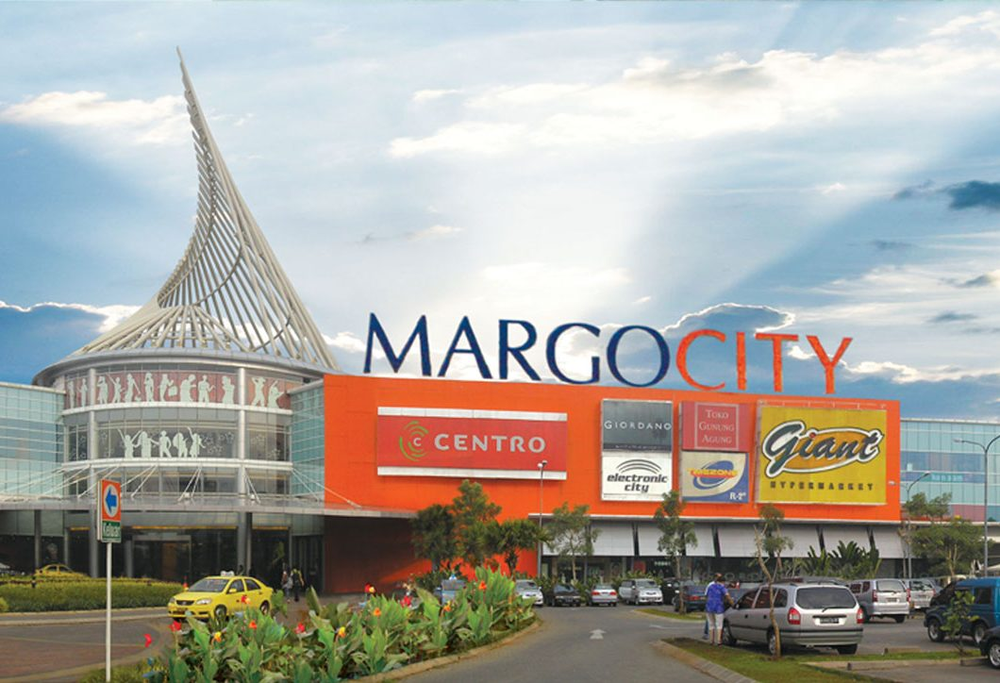

Tujuan Kota Depok
- Peningkatan IPM (Indeks Pembangunan Manusia): Melesat menjadi 84,04 pada tahun 2025, menandakan kualitas hidup warga yang semakin meningkat.
- Peningkatan Kesejahteraan Sosial: Mengurangi ketimpangan dan meningkatkan layanan sosial.
- Infrastruktur dan Lingkungan: Mewujudkan kota yang nyaman (nyaman huni/ramah keluarga) dan berkelanjutan.
- Pelayanan Prima: Pemerintahan yang transparan, akuntabel, dan berbasis teknologi (Smart City).
- Peningkatan Ekonomi: Kemandirian ekonomi melalui UMKM dan ekonomi kreatif.
Visi & Misi Kota Depok
- Peningkatan Produktivitas SDM: Memperkuat pembangunan sumber daya manusia secara inklusif.
- Infrastruktur Maju & Lingkungan: Mempercepat pembangunan infrastruktur yang maju dan ramah lingkungan.
- Ekonomi Kreatif: Mengembangkan ekonomi kreatif berbasis teknologi digital.
- Transformasi Pelayanan: Mewujudkan birokrasi yang lincah, digital, dan berorientasi pada pelayanan publik yang prima dan terintegrasi.
Berita Terkini
`Galeri Kota Depok



